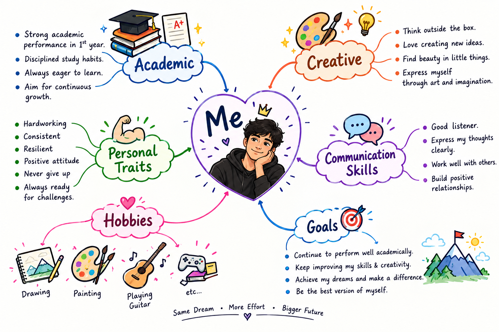

2025 – Present
Bachelor of Physiotherapy (BPT)
Dolphin PG Institute of Biomedical and Natural Sciences, Dehradun
AnatomyPhysiologyExercise Therapy
ElectrotherapyBiomechanics
MY PROFILE
A visual snapshot of my academic journey, creativity, communication skills, personal qualities, hobbies, and future goals.

WELCOME TO MY PORTFOLIO
Learning, practicing, and growing toward compassionate and evidence-based physiotherapy care.
ABOUT ME
I am Suraj, a Bachelor of Physiotherapy student currently pursuing my second year at Dolphin PG Institute of Biomedical and Natural Sciences, Dehradun. I am passionate about developing my clinical knowledge, communication skills, and practical abilities to become a confident and compassionate physiotherapy professional.
I believe that continuous learning, creativity, and good communication are important for building meaningful connections with patients and supporting their rehabilitation journey.
EDUCATION
Dolphin PG Institute of Biomedical and Natural Sciences, Dehradun
SKILLS
Clear, respectful communication with patients, peers, and healthcare professionals.
A creative approach to learning, presentation, problem-solving, and patient interaction.
CERTIFICATIONS & WORKSHOPS
WORKSHOP CERTIFICATE
Certified workshop participation in Basic Life Support.
LET'S CONNECT
Feel free to reach out for academic collaboration, physiotherapy-related discussions, or professional opportunities.